BMC
Canvas el mismo día (9 bloques).

Briefing de monitores: la cadena del Datatón v0.3 — de dónde están los datos a un boceto honesto a las 16:00.
Páramo de Chingaza, Colombia. Jedidiahhorne, CC BY-SA 4.0
La promesa
Un día, una cadena. No empiecen por el tablero: primero el canvas, el mapa de calor y un solo flujo con puertas claras.
methodology-v0.3.md (VPS archive) · Gideon 22 nov 2026: BMC el mismo día; boceto de tablero a las 16:00.
Reserva Yaigojé Apaporis, Colombia. Jucatili25, CC BY-SA 4.0

Canvas el mismo día (9 bloques).
Mapa de calor 0–18; etiquetas, no exclusiones.
Escalera Medallion; nivel calculado.
Tarjeta valor + boceto de un solo pantallazo.
Mentores eligen 6 de ~20 equipos.
Pitches finales; utilidad + honestidad.
Puerta 1 (cierre Bloque 1): sin 1–2 flujos de trabajo elegidos con la regla de selección → no entra al Bloque 2. El mapa de calor etiqueta; no excluye. Puerta 2: sin tarjeta Q3 completa → no hay boceto para las 16:00.
methodology-v0.3.md v0.3 · VPS /opt/claude-files/Clients/Air4U/datathon-questionnaires/
Paso 1
Se llena el mismo día del Datatón, no viene precargado.
Fundador u operador del equipo startup, con apoyo del monitor.
Ancla los nueve bloques donde Q1 pregunta “¿dónde están los datos?”.
Paso 2
Por defecto Google Forms. Alternativas: Tally, LimeSurvey.
PDF con membrete CTH (misma lista de preguntas que el formulario).
Las preguntas del formulario y del PDF son idénticas.
q1-data-presence-heatmap.md v0.3 · Gideon 22 nov 2026 (Forms + PDF marca CTH)
Paso 3
11:00–12:30 (horario orientativo, agenda del día).
1–2 flujos de trabajo elegidos; primer flujo de datos claro.
Al cierre del Bloque 1: 1–2 flujos de trabajo elegidos; si no hay elección válida, no avanza al Bloque 2 (el mapa de calor solo etiqueta datos).
Río Magdalena, Colombia. Quillero1973, CC BY-SA 4.0
Paso 4
Datos propios
Si el equipo ya tiene datos nombrados en el BMC; respetar derechos y acceso (G, A).
Abiertos o sintéticos
Fuentes verificadas Colombia/Bogotá o datos sintéticos honestos cuando no hay export.
Paneles sandbox Q3
Baseline (cliente) · Delta (intervención) · Landscape (contexto abierto).
open-data-sources.md · data-rights-note.md (VPS archive v0.3)
Paso 5
Herramientas open source, o hojas generadas con su propia IA (p. ej. Gemini).
No hay stack obligatorio de Metabase, Baserow u otro producto comercial.
Tarjeta Q3 completa y trazable → recién entonces el boceto de tablero cuenta para las 16:00.
Gideon 22 nov 2026 · q2-data-workflow.md v0.3
Paso 6
Boceto de un solo pantallazo (Markdown, tabla o ASCII): tres paneles, números firmes o estimados.
No es un producto en producción ni tablero público mientras los derechos estén abiertos.
Visual generado con herramientas abiertas o IA del equipo; el criterio sigue siendo honestidad + utilidad.
q3-data-to-value-card.md v0.3 · methodology-v0.3.md
11:00–12:30
Bloque 1
BMC + Q1 mapa de calor + elección de flujos (Puerta 1).
13:30–16:00
Bloque 2
Q2 escalera + Q3 tarjeta + ficha/boceto (Puerta 2).
16:00
Pitches
6 equipos en shortlist presentan; jueces puntúan utilidad y honestidad.
Antes 16:00
Mentores
Shortlist de 6; bonus +1 por número Silver+ en la tarjeta.
facilitator-guide.md · finals-judging-sheet.md v0.3.1
Puntuación finales (ilustrativa)
Utilidad 4/5 · Honestidad 4/5 · Total 8/10. Los tres números van como estimados; medallion None en todos (sin rung de medallion para honestidad). Tablero público: No.
Escenario
Startup Air4U · clínica de Bogotá (piloto), sin nombre de cliente. Ilustrativo — Air4U no ha llenado los cuestionarios.
tests/air4u/q3-worked-example.md · VPS archive
| Control | Qué mirar |
|---|---|
| Mapa Q1 | Heatmap hecho; bandas y etiquetas visibles. |
| Flujos | 1–2 flujos de trabajo elegidos con regla de selección. |
| Tarjeta Q3 | Usuario, decisión, 2–3 números con panel y rung. |
| Bonus Silver | +1 mentor por número firme en Silver+. |
| Shortlist | 6 equipos antes de las 16:00. |
scoring-rubric.md v0.3 · finals-judging-sheet.md v0.3.1
No piensan en flujos; saltan bloques del BMC.
Quieren tres historias a la vez; pierden la Puerta 1.
“No tenemos datos”: usar abiertos/sintéticos con etiqueta honesta.
UI llamativa sin boceto ni números estimados cuando el medallion es None.
Quieren mapa público con datos abiertos en G.
Devolverlos a la cadena: puerta → tarjeta → boceto.
Cacao, Colombia. Crista Castellanos, CC BY-SA 4.0
Una cadena, dos puertas: Bloque 1 = flujo y mapa; Bloque 2 = tarjeta Q3 + boceto listo a las 16:00. La honestidad puede ganar al espectáculo.
CleantechHUB · Metodología Datatón v0.3
Río Magdalena, Colombia. Quillero1973, CC BY-SA 4.0